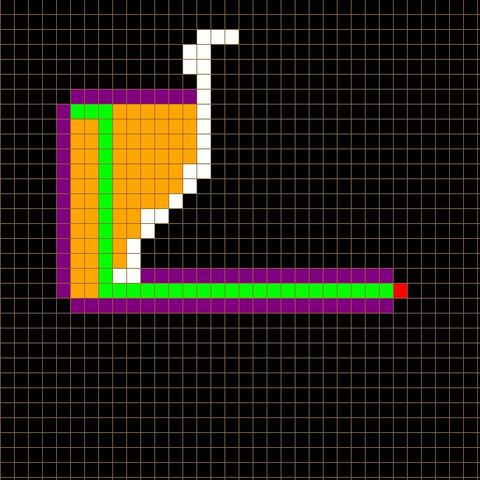

Built With Python
The A* Algorithm is a searching algorithm that is used to find the shortest path between an initial and a final point. It uses a heuristic approach, sacrificing optimality, with precision and accuracy for speed, to solve problems faster and more efficiently.
It uses a heuristic approach, sacrificing optimality, with precision and accuracy for speed, to solve problems faster and more efficiently. However, one major practical drawback is its space complexity, as it stores all generated nodes in memory.
Check out this repository on my GitHub profile to view the source code and instructions on how to run this program.